Features
Screenshots show made-up sample data.

Today, one calm page
A single sentence about the day, what is due, what is next, a mood check-in, habits and a body strip. Nothing shouts. Late things are slipped, not a wall of red.
On a phone you can swipe a task right to finish it, left to delete it (with Undo), and pull down to refresh.

Capture in seconds
Type, dictate or paste. Dates, #tags, @places and !priority are understood as you type. Paste an Instagram link or caption and tap To lists to file it straight away.
The Capture sheet is a bottom sheet you can drag down to close.

Lists that stay calm
Each row shows only what you need. Restaurants and cafes: cuisine · area · cost. Films and series: genre · language · ★ IMDb. Everything else is one tap away in the item.
- Finished items are hidden, never deleted; a dropdown brings them back.
- Something is only ever added once, however you add it (Instagram, quick-add, form, CSV). Different spellings, accents, “The” and bracketed notes are ignored.
- Select several (long-press) to mark done, move or delete. Find duplicates merges them.
- Swipe a row to finish or remove it.
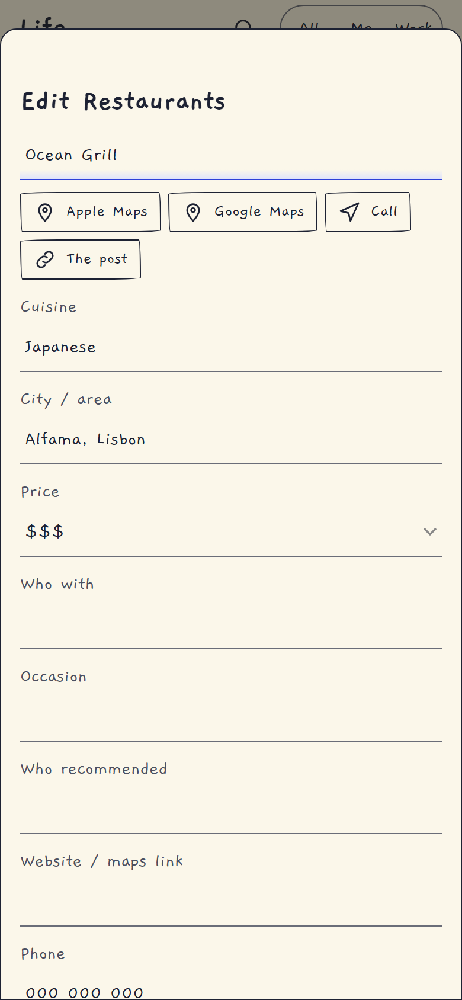
Open a place or film
Every item has quick links: Apple Maps, Google Maps, Call, the original Instagram post; for films, the trailer, where to watch and IMDb. You can move it to another list from here.

Filled in for you
When you add a film or series, Life looks it up: genre, language and year come from Wikidata (it knows recent releases), and the IMDb rating comes from IMDb's free ratings file, matched by IMDb ID. For places, cuisine and a cost estimate come from a cheap AI call, and the area from the post itself or OpenStreetMap when it can be found. Anything uncertain is left blank, never invented.
Surprise me picks something with filters (cuisine, price, genre, language).
Share anything into Life
An iPhone Shortcut puts Save to Life in the Share Sheet. Share an Instagram post (caption and every slide are read, so lists like "My top 10 films" work), a blog post, a link, or a screenshot.
- Restaurants go to Restaurants, bakeries and coffee places to Cafes, films to Movies to watch, series to Series to watch, and you can add your own lists.
- Headings like "Top 10 movies so far" are not mistaken for titles.
- Not recognised? It goes to your Inbox, so nothing is lost.
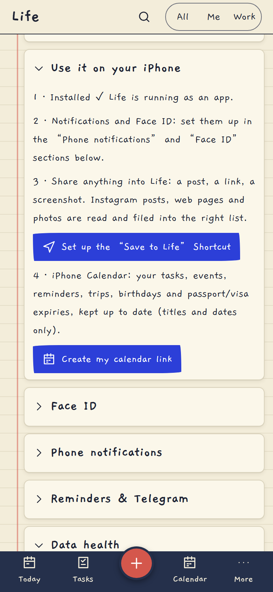
Set it up in one screen
Settings → Use it on your iPhone creates the token, shows exactly what to paste into the Shortcut, and has a Test button.
Travel that knows your situation

Entry for you
Every country page tells you what you need, from your passport, where you live and the visas you already hold, using the airline's entry-rule data. It says why: “you hold your US visa”, with the airline's own condition quoted (for example “the visa must be multiple-entry and used once”).
It is condensed by choosing from fixed answers (no free-text guessing), so wording never drifts from the source.
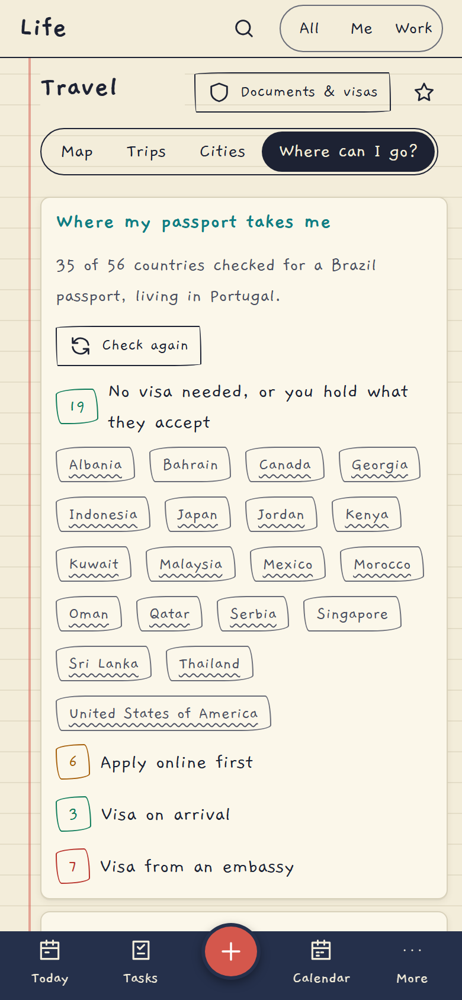
Where can I go?
One tap checks every country in the background and sorts them: no visa needed (or you hold what they accept), apply online first, visa on arrival, embassy visa. A daily re-check alerts you if the rules change for a country you plan to visit.
The pre-trip checklist turns this into to-dos, with an apply-by date.
On the desktop too
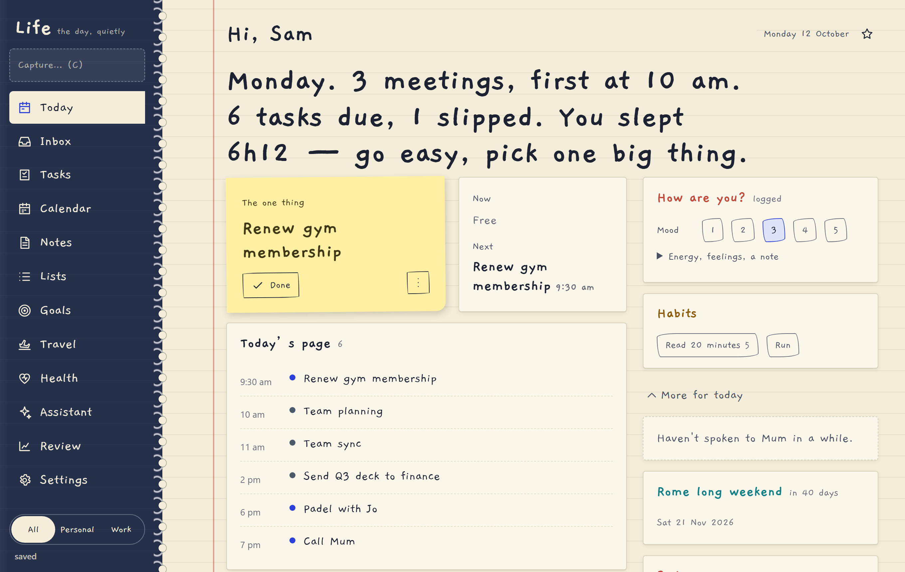
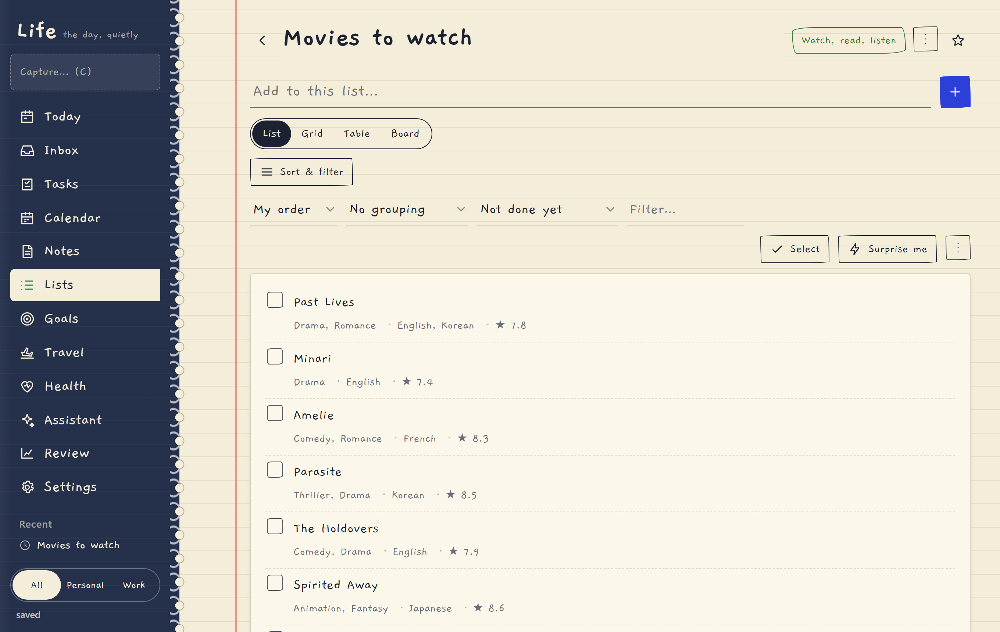
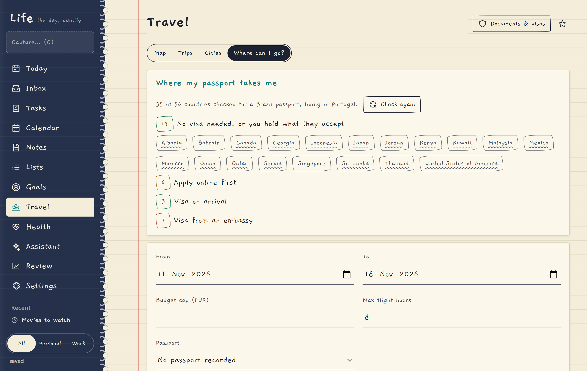
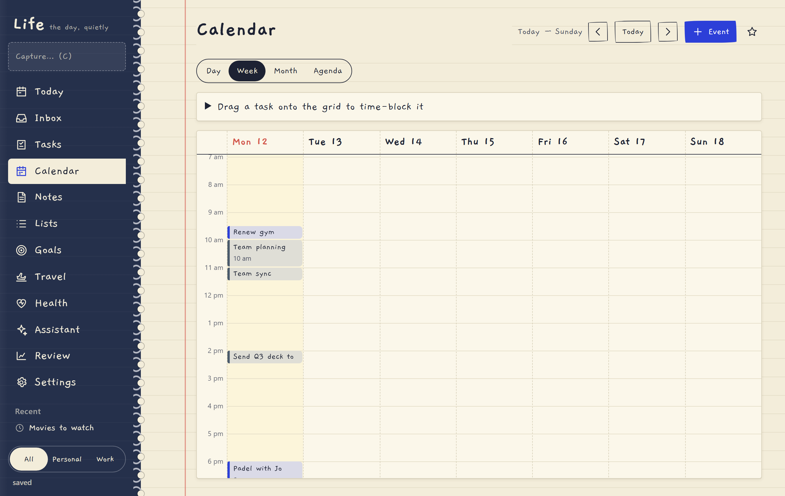
Phone notifications, Face ID and your Calendar
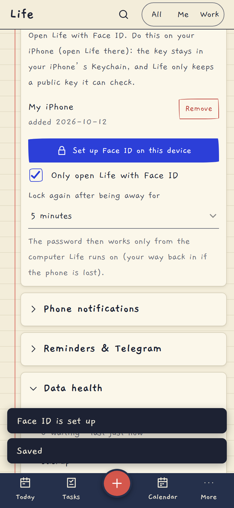
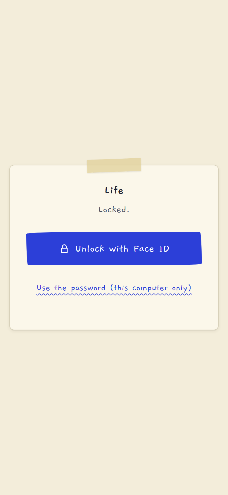
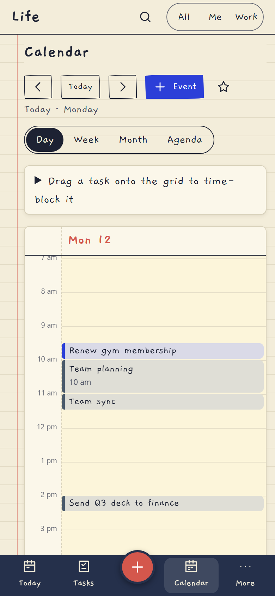
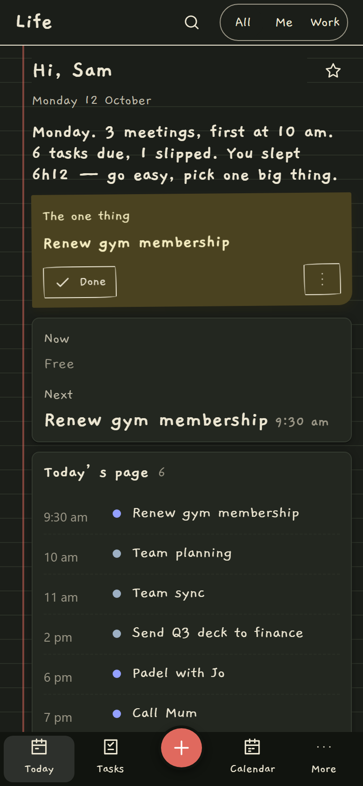
- Notifications reach the phone as real push (installed app) and/or Telegram: reminders, the morning brief, trips and flights, passport/visa expiry, birthdays, entry-rule changes, and problems. Per-category switches, quiet hours respected, urgent flights always come through. Tapping one opens the right page.
- Face ID: "Only open Life with Face ID". Lock when you leave the app, or after 1, 5 or 15 minutes. The password then works only from the computer Life runs on.
- Calendar feed: your tasks, events, reminders, trips, birthdays and passport/visa expiries in the iPhone Calendar app (titles and dates only).
- Siri / Shortcuts: "Hey Siri, what's my day?" reads your day aloud.
Also in the box
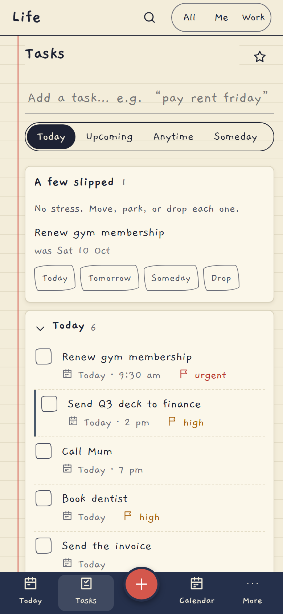
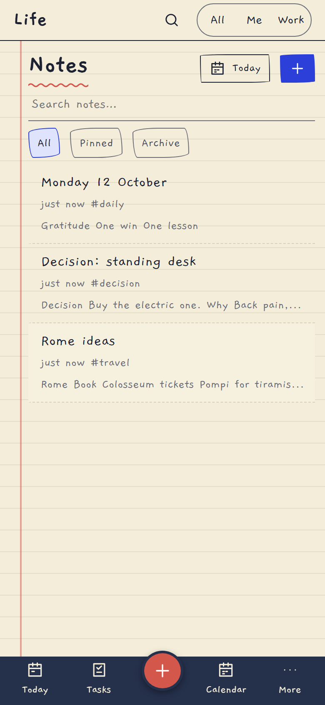
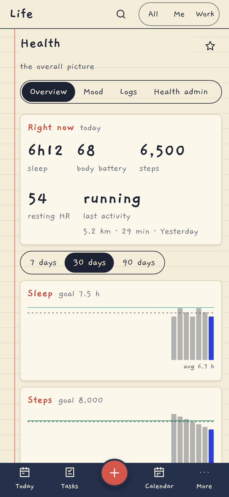
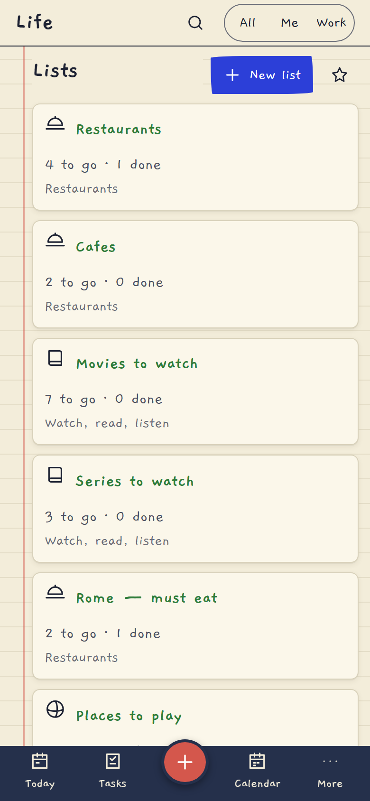
- Garmin (health): sign in once; Life keeps a login token, not your password, so no repeated security-code emails.
- Assistant: asks before it changes anything (confirm cards), everything logged and undoable.
- Review: weekly, monthly and a year-in-review poster. Backups: nightly, plus download one to the Files app.